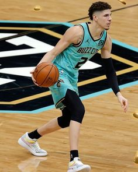
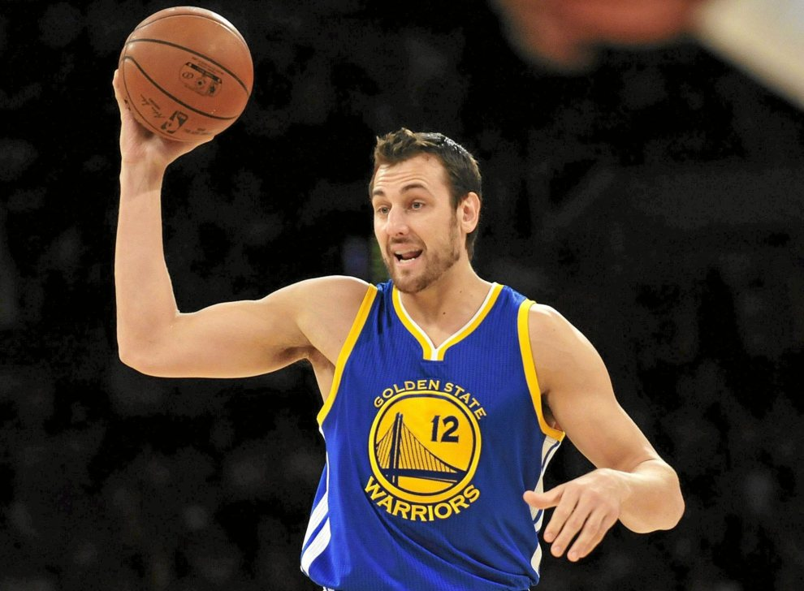
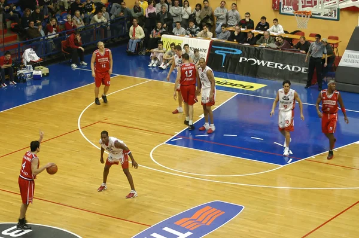
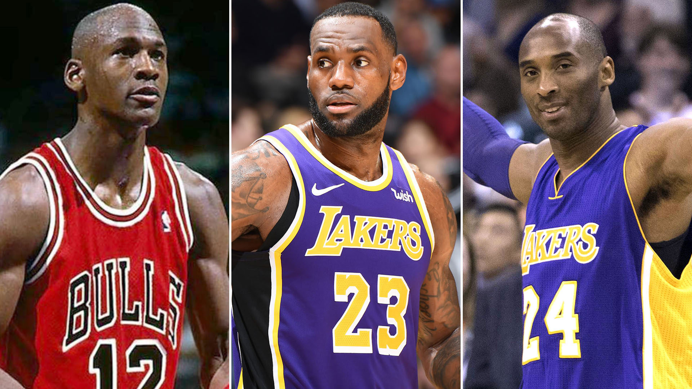

<main>
  <section>
    <style>
      @import url('https://fonts.googleapis.com/css2?family=Roboto:wght@400;700&display=swap');

      body {
        font-family: 'Roboto', sans-serif;
        background: linear-gradient(to right, #001219, #005f73);
        color: #ffffff;
        margin: 0;
        padding: 0;
      }

      section {
        background-color: rgba(255, 255, 255, 0.05);
        padding: 40px 20px;
        max-width: 1000px;
        margin: auto;
        border-radius: 10px;
      }

      h2 {
        text-align: center;
        font-size: 2.5em;
        margin-bottom: 30px;
        color: #ffdd57;
      }

      p {
        text-align: center;
        font-size: 1.2em;
        margin-bottom: 40px;
      }

      .equipo {
        background-color: rgba(255, 255, 255, 0.1);
        border-radius: 8px;
        padding: 20px;
        margin-bottom: 30px;
        box-shadow: 0 4px 12px rgba(0, 0, 0, 0.2);
      }

      .equipo h3 {
        font-size: 1.7em;
        margin-bottom: 10px;
        color: #ffd166;
      }

      .equipo p {
        line-height: 1.6;
        font-size: 1.05em;
      }

      .equipo img {
        width: 100%;
        max-width: 400px;
        display: block;
        margin: 15px auto;
        border-radius: 10px;
      }

      .boton {
        display: block;
        width: fit-content;
        margin: 30px auto 0;
        background-color: #ff6b6b;
        color: white;
        text-decoration: none;
        padding: 12px 24px;
        border-radius: 30px;
        font-weight: bold;
        font-size: 1em;
        transition: background-color 0.3s ease, transform 0.2s ease;
      }

      .boton:hover {
        background-color: #fa5252;
        transform: scale(1.05);
      }
    </style>

    <h2>Equipos Destacados</h2>
    <p>Aquí te presentamos una selección de equipos importantes en el mundo del básquet, con datos históricos, estilo de juego y figuras destacadas.</p>

    <div class="equipo">
      <h3>Los Halcones</h3>
      <p><strong>Fundación:</strong> 1985<br>
         <strong>Ubicación:</strong> Ciudad Central<br>
         <strong>Estilo de juego:</strong> Defensa intensa y contraataque rápido.<br>
         <strong>Palmarés:</strong> 6 campeonatos nacionales y 2 internacionales.<br>
         <strong>Jugadores destacados:</strong> Carlos Méndez (base), Javier Soto (pivot).</p>
      
    </div>

    <div class="equipo">
      <h3>Estrellas del Norte</h3>
      <p><strong>Fundación:</strong> 1992<br>
         <strong>Ubicación:</strong> Puerto Norte<br>
         <strong>Estilo de juego:</strong> Ataque veloz, con triples como arma principal.<br>
         <strong>Palmarés:</strong> 4 títulos nacionales, 1 subcampeonato continental.<br>
         <strong>Jugadores destacados:</strong> Esteban Ramírez (escolta), Leo Silva (alero).</p>
      
    </div>

    <div class="equipo">
      <h3>Tigres del Sur</h3>
      <p><strong>Fundación:</strong> 2001<br>
         <strong>Ubicación:</strong> Villa Sur<br>
         <strong>Estilo de juego:</strong> Juego físico y transiciones rápidas.<br>
         <strong>Palmarés:</strong> Finalistas en 3 temporadas consecutivas.<br>
         <strong>Jugadores destacados:</strong> Tomás Araya (ala-pivot), Nahuel Ríos (base).</p>
      
    </div>

    <div class="equipo">
      <h3>Águilas Doradas</h3>
      <p><strong>Fundación:</strong> 1970<br>
         <strong>Ubicación:</strong> Altos de Oro<br>
         <strong>Estilo de juego:</strong> Juego clásico, dominio del rebote y control del ritmo.<br>
         <strong>Palmarés:</strong> 10 campeonatos locales, 3 copas regionales.<br>
         <strong>Jugadores destacados:</strong> Daniel Torres (pivot), Emiliano Vera (base).</p>
      
    </div>

    <a href="https://www.google.com/search?q=jugadores+actuales+de+la+NBA" target="_blank" class="boton">Ver más</a>

  </section>
</main>
